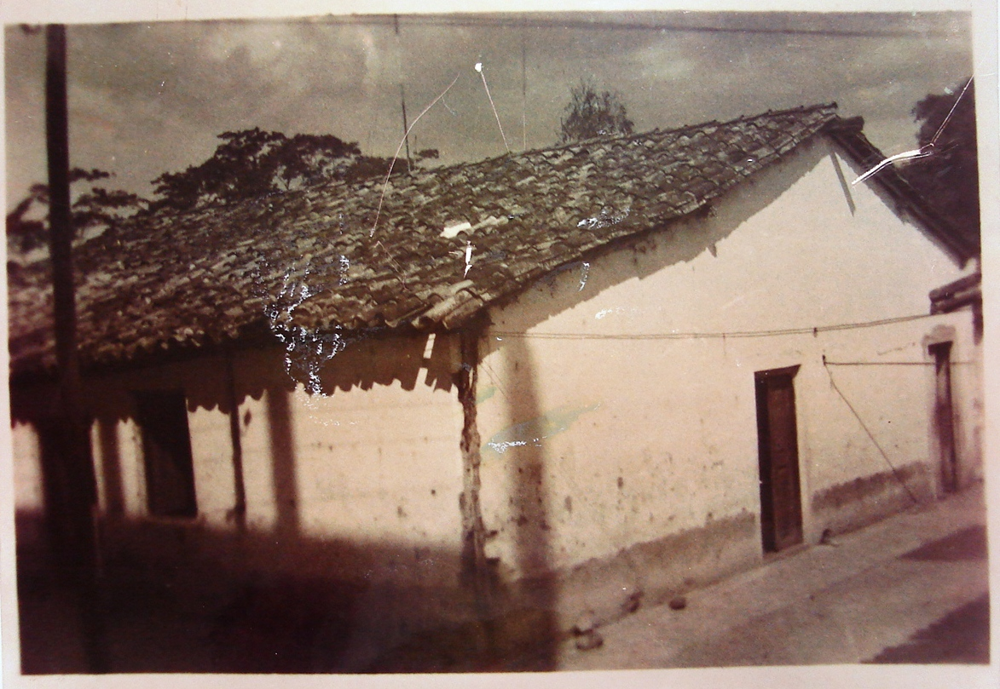
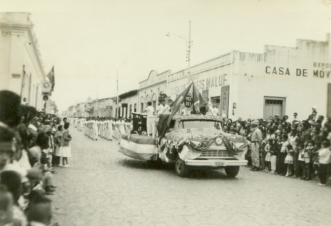
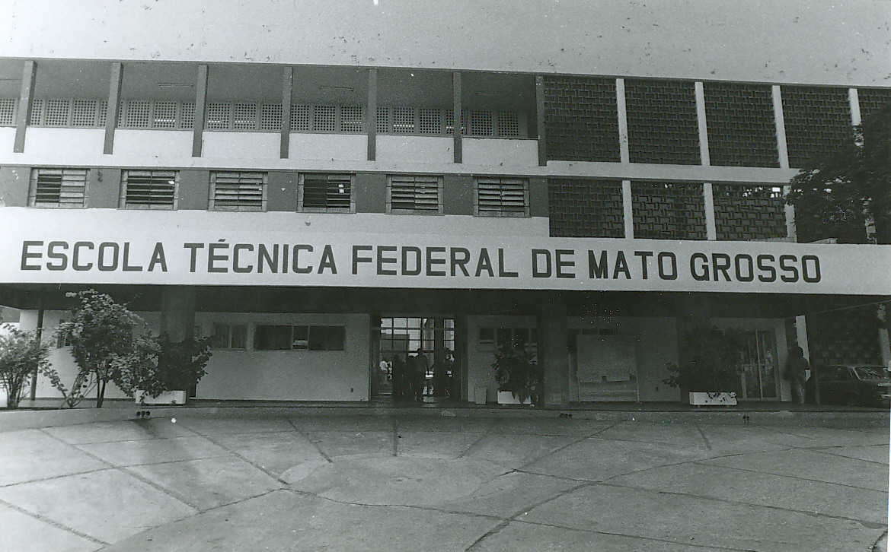
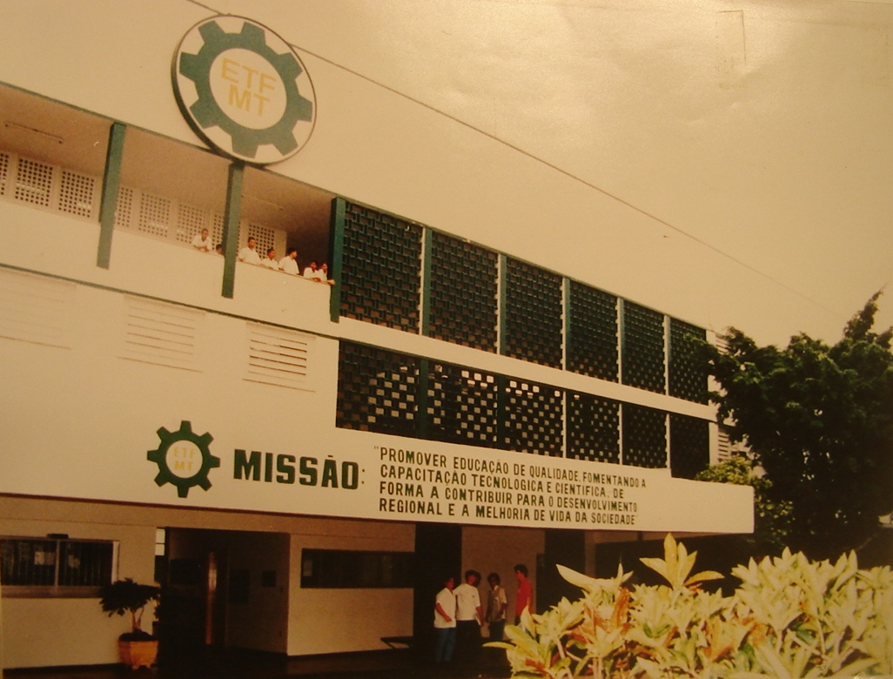

Foto: Escola Técnica Federal de Mato Grosso, pátio principal.
- Autor : Rivaldo Santana Dias
- Data : 02/06/2003
- Descrição : Foto da faixada da Escola Técnica Federal de Mato Grosso, pátio principal.

Foto: Desfile do Instituro no Centro de Cuiabá
- Autor : Desconhecido
- Data : 07/09/1975
- Descrição : Desfile de 07 de setembro com estudantes da antiga ETF- Escola Técnica de Mato Grosso

Foto: Escola Técnica Federal de Mato Grosso
- Autor : Antonieta Maria da Silva
- Data : 29/12/1990
- Descrição : Foto da faixada da Escola Técnica Federal de Mato Grosso, pátio principal.

Foto: Escola de Aprendizes e Artífices de Mato Grosso
- Autor : Joselino Alves Medeiros
- Data : 21/09/1999
- Descrição : Primeiro prédio da Escola de Aprendizes e Artífices de Mato Grosso.